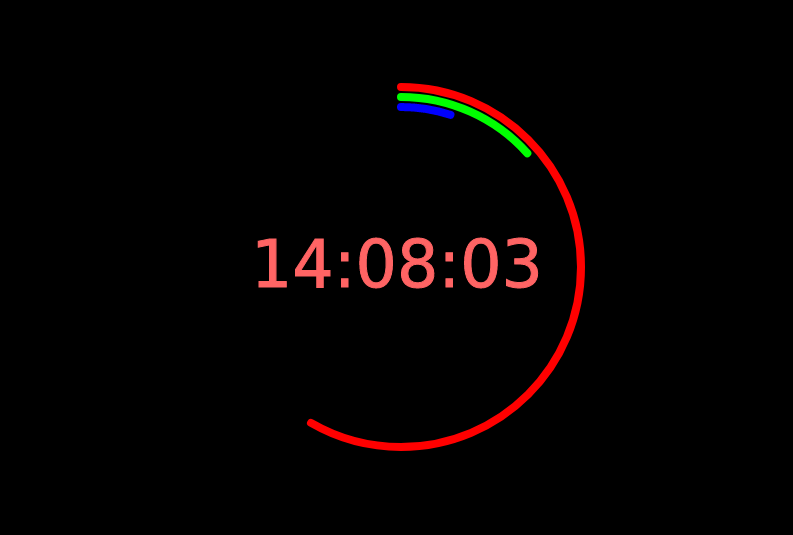

Projetos

Aproximando Pi
Pequeno aplicativo para calcular o valor aproximado de Pi, usando de recursos gráficos e estatísca, feito em p5.js. Clique!

Perndulo
Simulador de pêndulo online feito em p5.js

Urna eletrônica
App web desenvolvido para que você possa criar suas próprias eleições facilmente e depois fazer a votação no mesmo app.

Relógio neon
Design simples para relógio.